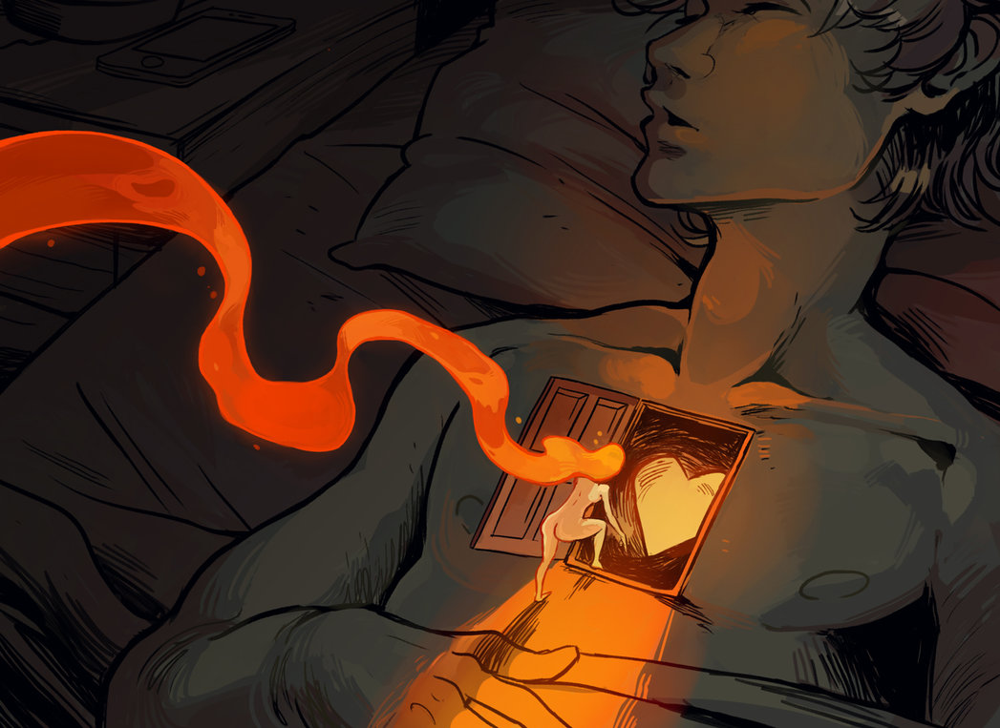
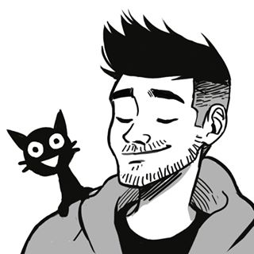
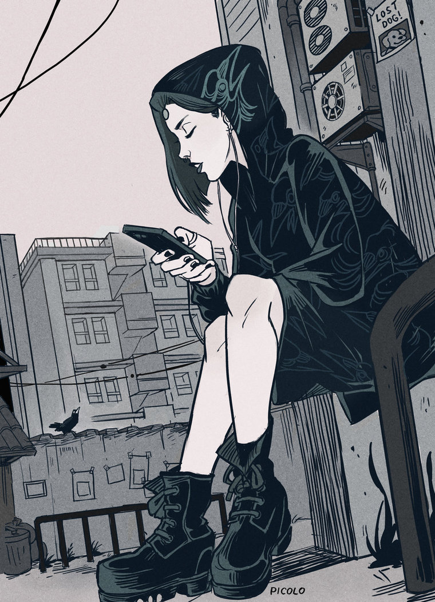

<div class="artist-intro">
    
    <div class="artist-info">
        
        <span class="name">Gabriel Picolo</span>
        <span class="work">Freelance illustrator and comic artist</span>
        <span class="country">Sao Paulo, Brasil</span>
    </div>

</div>

<div class="barra">
    <span class="follow">Followers(5k)</span>
    <span class="follow">Following(120)</span>
    <input type="image" src="../img/heart.png" alt="submit" name="submit" />
</div>

<div class="images">
    
    
    
    
    
</div>

<div class="artist-links">
    <p>Artist links</p>
    <a href="https://www.instagram.com/_picolo/">Instagram</a>
    <a href="https://picolo-kun.deviantart.com/">DeviantArt</a>
    <a href="https://www.facebook.com/GabrielPicoloArt/">Facebook</a>
    <a href="https://twitter.com/_gabrielpicolo?lang=ca">Twitter</a>
    <a href="https://www.patreon.com/Picolo">Patreon</a>
    <a href="https://www.behance.net/_Picolo">Behance</a>
</div>